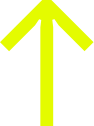

Visuell identitet for alt vi leverer: slides, rapporter, diagrammer, tabeller og nettsider.
Klikk en farge for å kopiere hexkoden. Bytt til mørkt tema øverst for å se hvordan alt endrer seg.
Logo
Ingenting annet. Klikk for å laste ned.

Pilen er et dekorativt ikon som brukes inne i innholdsbokser. I PowerPoint-malen finnes den i én enkelt layout, og den står aldri sammen med navnet. Bruk den kremfargede logoen på mørkegrønn bakgrunn — standardvarianten har samme farge som bakgrunnen og forsvinner.
Farger
Verdiene under leses direkte fra design-tokens.css, så de kan ikke bli utdaterte.
Disse endrer seg med temaet. Bytt øverst for å se begge.
Bruk aldri rene primærfarger som ikke står i paletten. Ingen ren blå, ingen ren rød.
Diagramfarger
Serie 2 bytter i mørkt tema, fordi mørkegrønn er bakgrunnen der og ville blitt usynlig.
Rutenett og akselinjer: rammefargen. Aksetekst: dempet tekstfarge.
Typografi
Én font til alt vi lager: overskrifter, brødtekst, tabeller, knapper og etiketter. Regular er standard, Bold til overskrifter og uthevinger. Logo-snittet er reservert wordmarket.
Brødtekst i NoA Serif 2.0 Regular, 16px, linjeavstand 1,65. Etiketter, knapper, tabellceller og metadata bruker samme font i samme snitt.
Dempet støttetekst, 14px.
| Rolle | Størrelse | Brukes til |
|---|---|---|
| H1 / slide-tittel | 30px | Sidetittel, én per side |
| H2 | 24px | Seksjoner |
| H3 | 20px | Underseksjoner, korttitler |
| Ingress | 18px | Innledende avsnitt |
| Brødtekst | 16px | Løpende tekst |
| Støttetekst | 14px | Metadata, kildehenvisning |
| Etikett | 12px | Seksjonsetiketter, footer |
Grunnregel: visuell vekt skal komme fra typografi og struktur, ikke fra farger alene. Unngå støyende farger, gradienter og dekor uten funksjon.
Komponenter
Begge varianter er fylte, aldri bare ramme. Pill-form, 20px radius.
Nøkkelfunn eller sitat, med lime venstrekant.
| Element | Verdi |
|---|---|
| Hjørneradius standard | 6px |
| Hjørneradius kort og panel | 12px |
| Hjørneradius pill og badge | 20px |
| Skillelinje | 1px, rammefarge |
| Standard padding | 16px |
| Seksjonsavstand | 2rem |
For utviklere
Last inn CSS-variablene og bruk dem i stedet for hexverdier. Da følger alt temaet automatisk.
<link rel="stylesheet" href="design-tokens.css">
<link rel="stylesheet" href="dark/dark-tokens.css"> <!-- valgfritt -->Fonten følger med tokens-filen. design-tokens.css laster NoA Serif 2.0 med @font-face og relative stier, så mappen fonts/ må ligge ved siden av CSS-filen. Bruk var(--font-sans) til all tekst, var(--font-display) med font-weight:700 til overskrifter, og var(--font-logo) bare til wordmarket.
Mørkt tema er valgfritt. Lyst er standard. Aktiveres med <html data-theme="dark">.
Full dokumentasjon: DESIGN-SYSTEM.md · DARK-THEME.md · forhåndsvisning av mørkt tema
Ingen farge må være lik flaten den ligger på. Mørkegrønn er
bakgrunnen i mørkt tema, så en diagramserie eller logo i mørkegrønn forsvinner.
Bruk --chart-1 til --chart-4, som bytter med temaet.
{kind=link}
{kind=link}
{kind=link}